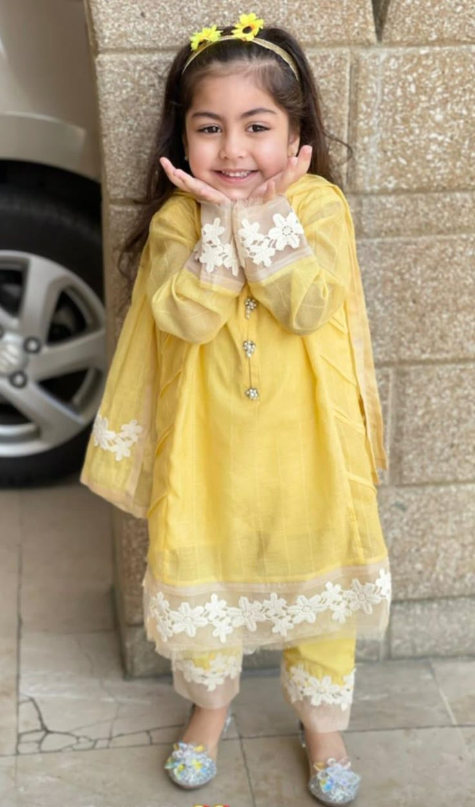

Product Name : Sunshine Blossom Kurti Set for Girls
Description :
Brighten up any day with our "Sunshine Blossom" traditional outfit for girls.
This 3-piece set includes a soft yellow kurti adorned with floral lace, matching bottoms,
and a light net dupatta. Designed to combine comfort with elegance, perfect for festive occasions.
Price : ₹1,299
Material : Soft Cotton with Net Lace
Style : Long kurti with embroidered lace, 3/4th sleeves, matching pants
Occasion : Festivals, Family Gatherings, Traditional Ceremonies
Care : Gentle hand wash, Do not bleach, Steam iron recommended
Size Range : 2–10 Years
Color : Lemon Yellow with White Floral Accents
Availability : In Stock ✅
Suggestions :
- Pair with cute floral juttis for the perfect traditional look.
- Add yellow floral hair accessories or bangles to complete the outfit.
- Ideal for Diwali, Holi, or birthday events.
Customer Reviews :
🌟🌟🌟🌟🌟 - "My daughter got so many compliments at the Holi function!" - Aarti M.
🌟🌟🌟🌟⭐ - "Great color and fabric quality, but the dupatta could be longer." - Nisha P.
🌟🌟🌟🌟🌟 - "Perfect traditional dress for my 4-year-old. She didn’t want to take it off!" - Priya S.
🌟🌟🌟🌟⭐ - "The lace is so pretty and delicate. Looks expensive!" - Farheen A.
🌟🌟🌟🌟🌟 - "Absolutely loved it. Fits beautifully and so soft on skin." - Manasa D.
Average Rating : ⭐ 4.8 / 5.0